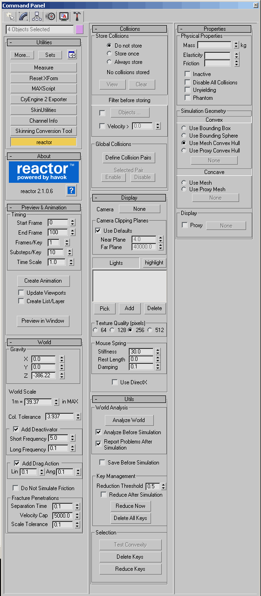

Обзор
Предварительно запеченный конвейер физики позволяет запекать физическую симуляцию в пакете создания 3D-активов для данных ключевого кадра и загружать ее в CRYENGINE. Как только предварительно запеченная физика окажется в движке, ее части можно будет отделить от анимации и физикализировать.
Разрушаемый объект
- Модель следует разбить на части интересным образом (точки разрыва должны иметь смысл, подумайте о том, как материал будет ломаться).
- Части должны иметь физические прокси с очень низким разрешением, старайтесь использовать коробки, когда это возможно.
- Убедитесь, что для материала Crytek Shader для всех объектов установлено значение «физический».
Настройка моделирования в 3ds Max
Создание коллекции твердых тел
- Выберите все объекты, которые вы хотите смоделировать, а затем выберите реактор -> Создать объект -> Коллекция твердых тел.
- Любой объект, который вы не хотите перемещать, можно установить в режим «Непреклонный».

- Поможет положить большой плоский куб в качестве «неподатливого» пола.
- В утилите реактора вы можете придать своим предметам «массу» и другие свойства.
Применение силы к твердым телам
Реактор очень прост в применении силы к объектам. Есть два основных способа:
- Ветер: Вы можете создать силу ветра, выбрав реактор -> Создать объект -> Ветер.
- Значения ветра могут быть привязаны к ключевым кадрам с течением времени при изменении в режиме автоматического ключа.
- Анимированные объекты: Вы можете анимировать другие физические объекты твердого тела, чтобы они сталкивались с вашим объектом, чтобы создать интересную симуляцию.
- Анимированные элементы должны быть настроены на «неподвижность» в развертывании утилиты реактора, в противном случае при столкновении с твердым объектом они начнут моделировать, а не придерживаться своей анимации по ключевым кадрам.
- Кости персонажа можно физикализовать и использовать, если у вас есть кинематографический эпизод, в котором персонаж взаимодействует с вашим ломающимся предметом.
- Сферы можно использовать для разрушения зданий, имитируя взрывы (удалите эти сферы после моделирования).
Предварительный просмотр моделирования
- Выбрать реактор -> Предварительный просмотр анимации... чтобы просмотреть предварительный просмотр вашей симуляции.
Запекание моделирования в данные ключевого кадра
- Выбрать реактор -> Создать анимацию и подождите, пока он преобразует вашу симуляцию в данные ключевого кадра.
Это действие нельзя отменить, поэтому сохраните копию сцены, прежде чем запекать ее в ключи.
Экспорт в CRYENGINE
Вот некоторые вещи, которые следует учитывать при экспорте предварительно запеченной физики в движок:
- Вы экспортируете анимацию как CGA:
- Все контроллеры положения и вращения объектов в CGA должны быть установлены на TCB. Проще всего это сделать с помощью CryAnim Инструменты (В свитке «Общие инструменты»).
- Выбрать объединить все узлы в опциях экспорта.
- Отключите все параметры экспорта костей, но прикажите экспортировать каждые «1» кадры.
- Выберите один объект, который не движется, и привяжите к нему все остальные части. Этот объект может быть тем, который вы установили на «непреклонный». В зданиях используйте фундамент.
- Вы можете добавить специальные метаданные к отдельным объектам CGA либо с помощью редактора метаданных, который находится в CryTools (Такелажные инструменты), или используя эти флаги в Пользовательские свойства объекта:
- Масса
- Коробка
- Сущность
- Текущая анимация будет отображаться как «По умолчанию» в экспортируемом вами CGA файле, для ее воспроизведения не требуется файл CAL.
- Назовите свой CGA тем же именем, что и исходный объект, чтобы материал работал с ним.
- Откройте свой CGA в редакторе персонажей и воспроизведите анимацию с надписью «По умолчанию». Вы должны увидеть воспроизведение анимации.
- Как всегда, подчиняйтесь Рекомендации по настройке персонажей для CRYENGINE; обратите особое внимание на отсутствие масштабов и преобразований.
Создание сущности AnimObject
Экспортировав CGA, поместите его в движок как AnimObject.
- Перетащите и поместите AnimObject из Панель сущностей -> Физика -> AnimObj.
- Помните, что ActivatePhysicsThreshold является частью силы тяжести, поэтому более тяжелую деталь будет труднее активировать, поскольку сила тяжести, действующая на нее, сильнее.
- Масса — это общее значение для всего CGA, например, Масса 100 на CGA со 100 частями даст 1 кг за штуку.
- Вы можете установить массу в метаданных UDP вашего CGA, как указано выше.
Свойства сущности
Имя | Описание | |
|---|---|---|
н | ActivatePhysicsDist | [FLOAT] — Это расстояние от точки поворота (в метрах), после которого объекты принудительно отделяются от анимации. |
н | ActivatePhysicsThreshold | [FLOAT] - Количество силы, необходимое для физикализации объекта. Это значение представляет собой долю текущей гравитации. |
? | AutoGenAIHidePts | [BOOL] - Количество силы, необходимой для физикализации анимированного объекта. |
? | Модель | [MODEL] - Созданная вами модель CGA. |
? | ModelFrozen | [MODEL] - |
? | выбираемый | [BOOL] - Определяет, можно ли подобрать объект. |
Ай | выбираемый | [Классы смарт-объектов] - |
? | Годный к употреблению | [BOOL] - Определяет, можно ли использовать объект. |
аб | UseMessage | [Строка] - Сообщение, отображаемое, когда объект находится в перекрестии для использования. |
Анимация | ||
? | AlwaysUpdate | [BOOL] - |
аб | Анимация | [Строка] - Анимация, которая будет воспроизводиться, в этом случае обычно используется по умолчанию. |
? | Петля | [BOOL] - Это приведет к зацикливанию анимации. |
? | PhysicalizeAfterAnimation | [BOOL] - Выберите это, чтобы физизировать все части после воспроизведения анимации. |
? | Играя | [BOOL] - Если этот флажок установлен, анимация начнется немедленно. |
н | Скорость | [FLOAT] - Множитель скорости воспроизведения анимации. |
аб | playerAnimationState | [Строка] - |
Физика | ||
? | ActivateOnDamage | [BOOL] - При выборе этого параметра любая поврежденная часть немедленно станет физической и отделится от анимации. |
? | шарнирно-сочлененный | [BOOL] - Вам необходимо выбрать этот параметр, если вы используете CGA, однако по умолчанию он не выбран. |
н | Плотность | [FLOAT] — Может использоваться вместо Mass (если масса равна -1), чтобы установить плотность каждого узла. |
н | Масса | [FLOAT] - Это общая масса для всего CGA. |
? | Физически | [BOOL] - Определяет, может ли CGA стать физическим. |
? | PushableByPlayers | [BOOL] - Позволяет игрокам толкать объект. |
? | Отдых | [BOOL] - находится ли объект в состоянии покоя изначально (лучше, чтобы это было установлено). |
? | RigidBody | [BOOL] - Если флажок не выбран, объектом будет static. У предварительно запеченных физических объектов он должен быть выбран. |